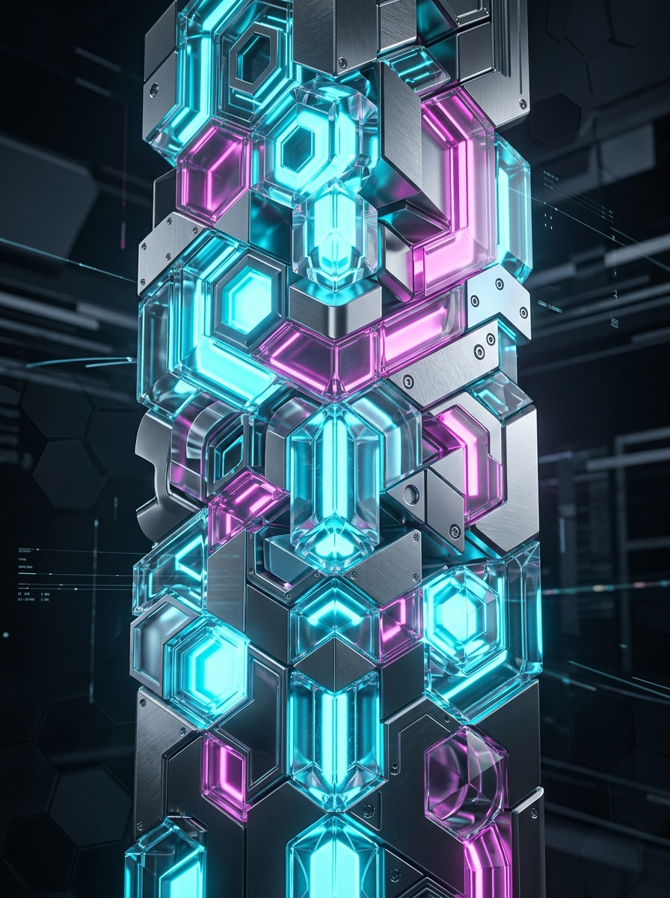

600+
Projects Tested and Delivered
85%
Reduction in Post-Release Defects
3x
Faster Test Cycle Execution
Trusted By 600+ Brands
What Is Software Testing and Why Businesses Are Outsourcing It
Software defects cost organizations over $2.41 trillion annually in lost revenue, remediation effort, and reputational damage. Most of those costs are preventable when quality assurance is built into the development process rather than bolted on at the end.
Software quality assurance services go beyond finding bugs. A structured QA process validates that your application performs correctly under real conditions, handles edge cases without failure, protects user data against security vulnerabilities, and meets the performance standards your users expect at scale. As release cycles accelerate under Agile and DevOps methodologies, the demand for embedded, continuous QA has grown significantly.
Partnering with a specialist software testing company gives engineering teams access to dedicated QA expertise, proven automation frameworks, and scalable testing capacity without the cost and timeline of building those capabilities in-house.
Why Businesses Partner with a Software Testing Company:
- ✓ Catch defects earlier when they cost less to fix
- ✓ Automate regression testing to accelerate release cycles
- ✓ Validate performance and security before production
- ✓ Scale QA capacity without expanding the internal team
Software Testing Services Built for Engineering Teams That Ship on Schedule
QA Consulting and Test Strategy
Testing without a strategy produces incomplete coverage and false confidence. Our QA testing services begin with a structured consulting engagement that assesses your current quality processes, identifies risk areas in your application, and designs a test strategy aligned with your release cadence, technology stack, and compliance requirements. You build on a framework that scales rather than starting over with every new project.
Manual Software Testing Services
Automated testing cannot replicate human judgment when evaluating usability, visual design, and complex user workflows. Our manual software testing services cover functional validation, exploratory testing, regression testing, and user acceptance testing across web, mobile, and desktop applications. Testers work from clearly documented test cases and report defects with the reproduction steps and environment details your developers need to resolve them efficiently.
Test Automation Services
Manual regression testing slows release cycles as codebases grow. We design and implement automation frameworks using Selenium, Cypress, Playwright, and Appium that run thousands of test cases in minutes. Every automation engagement produces maintainable scripts, not brittle one-time solutions that break with the next sprint. Automation integrates directly into your CI/CD pipeline so quality gates run on every build without manual intervention.
Performance and Load Testing
An application that works perfectly under ten users can fail catastrophically under ten thousand. We conduct load testing, stress testing, and endurance testing to identify the performance thresholds of your application before real users find them. Tools including JMeter and k6 simulate production traffic patterns across your critical user journeys so bottlenecks are identified and resolved before your next product launch or peak traffic event.
Security Testing Services
Security vulnerabilities discovered after release expose your users and your business to consequences that go well beyond a patch deployment. Our software QA services include penetration testing, vulnerability scanning, OWASP Top 10 validation, and API security testing conducted by experienced security engineers. Every engagement produces a prioritized findings report with remediation guidance your development team can act on immediately.
Mobile Application Testing
Mobile applications carry higher quality expectations than ever. Users abandon apps that crash, load slowly, or behave inconsistently across devices. We test iOS and Android applications across real devices and device simulators, covering functional behavior, performance, network conditions, battery usage, and cross-device compatibility. Mobile testing is integrated into your development workflow, not scheduled as a separate phase after development closes.
Enterprise Software Testing
Enterprise software testing introduces complexity that consumer application testing does not. Integration points with legacy systems, compliance requirements, high transaction volumes, and multi-user concurrency all require test approaches designed for enterprise environments. We have delivered software testing outsourcing services for enterprise clients managing complex, multi-system environments and understand the governance and security standards those engagements require.
Software Testing Outsourcing Services
Building an in-house QA team takes months and significant investment. Software testing outsourcing companies provide immediate access to experienced testers, proven tools, and scalable capacity that adjusts to your release schedule. We embed directly into your development workflow, operate within your project management tools, and maintain the documentation standards your team requires throughout the engagement.
Why Businesses Choose Commerce Pundit as Their Software Testing Company
Engineering-Integrated QA
We embed QA into your development workflow rather than treating it as a separate phase. Testers work alongside developers from the first sprint, which means defects are identified and resolved before they compound across future releases.
Automation Built to Last
Every automation framework we build is designed for long-term maintainability. Scripts are structured for reuse across releases and updated as the application evolves. You do not inherit automation debt that costs more to maintain than it saves.
Full-Stack Testing Capability
Web, mobile, API, performance, and security testing all sit within the same team. You work with one accountable partner across every testing discipline rather than managing separate specialists for each.
Quality Assurance Software Testing Expertise
Our team brings deep quality assurance software testing expertise across industries including ecommerce, healthcare, fintech, SaaS, and enterprise software. Domain knowledge shapes how test cases are written, what edge cases are prioritized, and how findings are communicated to your development team.
Transparent Reporting on Every Defect
Every defect is logged with severity classification, reproduction steps, environment details, and screenshots. Weekly status reports connect testing progress to your release milestones so your team always knows where coverage stands and what remains before a release is cleared.
Long-Term Technical Partnership
Our clients stay with us for an average of 10 years. Software quality assurance is most effective when the team managing it understands your codebase, your user base, and your release patterns deeply over time.

Real Results Delivered Across Industries
Test Automation That Reduced Regression Cycle From 5 Days to 4 Hours
Challenge: A SaaS company was running a manual regression suite that took five days per release cycle. The testing bottleneck was delaying releases and forcing developers to wait on QA sign-off before deploying features that were already complete.
Solution: We designed and implemented a Cypress-based automation framework covering 94% of the critical user journey test cases, integrated into the CI/CD pipeline so regression ran automatically on every pull request.
- Regression Cycle Reduction: From 5 days to 4 hours
- Test Coverage Increase: From 41% to 94%
- Post-Release Defect Rate: Reduced by 78%
- Company size: 80+
Performance Testing That Prevented a Peak Season Outage
Challenge: An ecommerce platform had experienced checkout failures during a prior peak season event. The engineering team had no visibility into at what traffic volume the system degraded and no data to guide infrastructure scaling decisions before the next high-traffic period.
Solution: We conducted load and stress testing using JMeter across all critical checkout and product page journeys, simulating up to 50,000 concurrent users. Three critical bottlenecks were identified and resolved six weeks before peak season.
- Concurrent Users Supported: 50,000+
- Checkout Failures During Peak Season: Zero
- Infrastructure Costs Saved: Optimized by 31% versus prior year
- Company size: 200+
Security Testing That Identified 23 Vulnerabilities Before a HIPAA Audit
Challenge: A healthcare software provider was preparing for a HIPAA compliance audit and had no prior formal security testing engagement. The internal team had limited security engineering experience and was unable to assess the application's vulnerability exposure independently.
Solution: We conducted a full penetration test and OWASP Top 10 validation across the application and its API layer, producing a prioritized findings report with remediation guidance. All critical and high-severity vulnerabilities were resolved before the audit.
- Vulnerabilities Identified: 23 across critical and high severity
- Critical Issues Resolved Before Audit: 100%
- HIPAA Audit Outcome: Passed without findings
- Company size: 150+
Our Software Testing Process
A Structured QA Workflow That Integrates with Your Development Cycle from Day One
01
Requirements and Test Planning
We review your application architecture, functional requirements, and release schedule to design a test plan that covers the right scope, prioritizes the highest-risk areas, and fits your timeline.
02
Test Case Design and Environment Setup
Test cases are written against your functional and non-functional requirements. Test environments are configured to mirror production conditions so results reflect real-world behavior accurately.
03
Test Execution and Defect Reporting
Manual and automated tests run according to the agreed plan. Every defect is logged with full reproduction detail and severity classification. Daily status updates keep your team informed throughout execution.
04
Reporting, Sign-Off and Optimization
A final test summary report is produced covering coverage achieved, defects found and resolved, and any open risks. Automation frameworks are handed over with documentation and the engagement transitions to ongoing support or the next release cycle.
Technology Stack Used in Our Software Testing Services
Selected for Your Application Type, Technology Stack, and Testing Requirements
Selenium, Cypress, Playwright, WebdriverIO, Appium, TestNG, JUnit